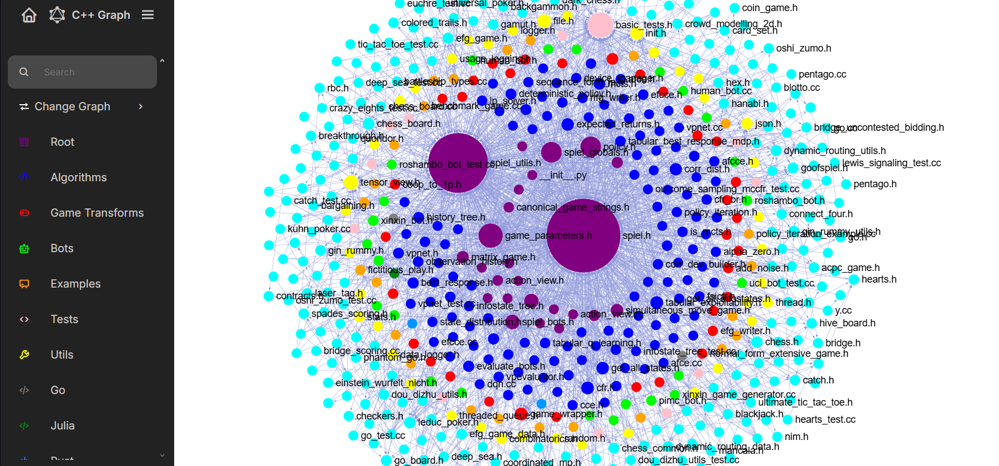
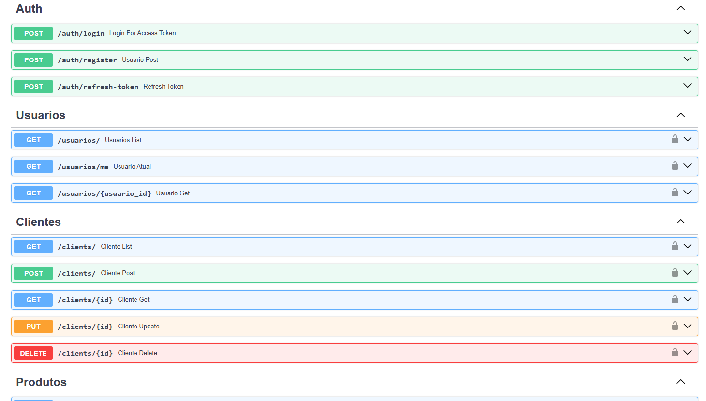

O Open Spiel Visual Graph é uma aplicação web feita com React e Sigma.js que mostra um grafo de dependências interativo do framework Open Spiel do Google DeepMind.
O site foi desenvolvido com o objetivo de ajudar desenvolvedores que utilizam o Open Spiel, fornecendo uma visão ampla e intuitiva dos arquivos do framework.
O site teve reconhecimento do Google DeepMind e foi adicionada uma seção na documentação oficial do OpenSpiel para a aplicação. (documentação do OpenSpiel)


Neste projeto foi criada uma API usando FastAPI que possui autenticação de usuários, registro de clientes, produtos e pedidos num banco de dados PostgreSQL e Docker para implantar a aplicação.

Donec eget ex magna. Interdum et malesuada fames ac ante ipsum primis in faucibus. Pellentesque venenatis dolor imperdiet dolor mattis sagittis magna etiam.

Donec eget ex magna. Interdum et malesuada fames ac ante ipsum primis in faucibus. Pellentesque venenatis dolor imperdiet dolor mattis sagittis magna etiam.

Donec eget ex magna. Interdum et malesuada fames ac ante ipsum primis in faucibus. Pellentesque venenatis dolor imperdiet dolor mattis sagittis magna etiam.